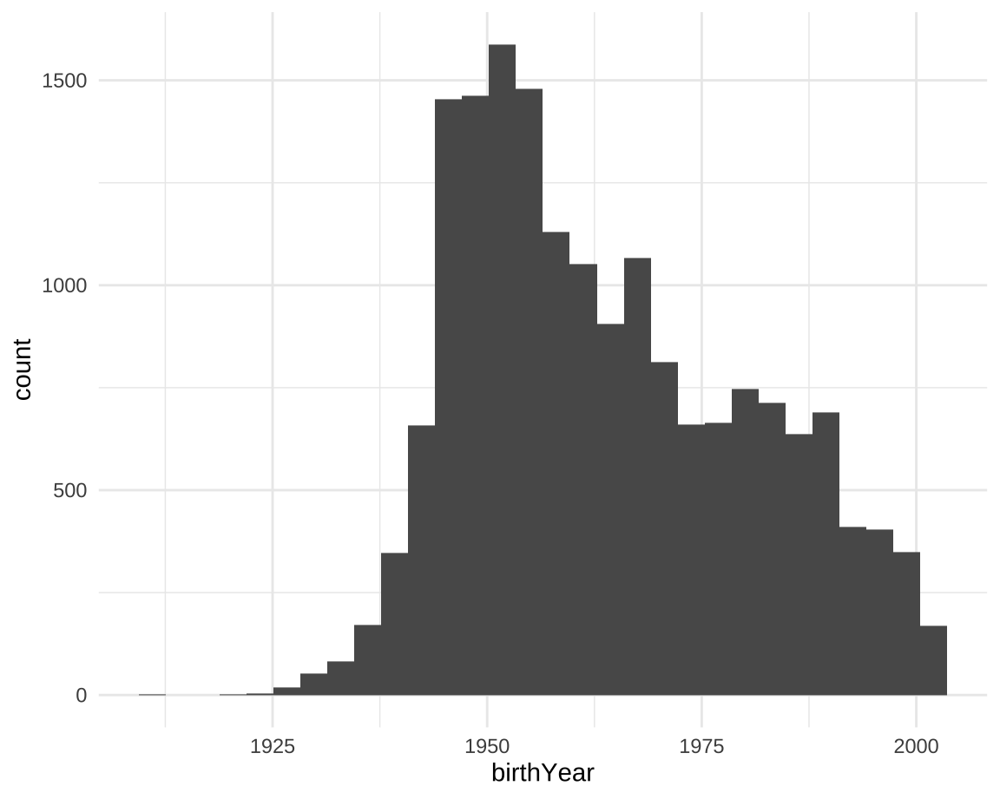
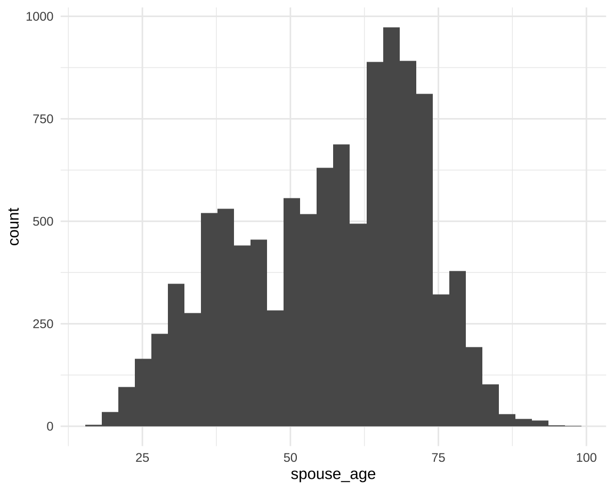

Section 7: Demographics
How worried are you that you or someone in your family will be exposed to COVID-19?
Birth Year

Gender
What is the highest level of education you have completed?
Employment
Are you of Hispanic, Latinx, or Spanish origin?
How would you describe your Hispanic, Latinx or Spanish origin?
Which racial and/or ethnic groups do you consider yourself a member of? Please select as many as apply.
What is your current marital status?
How would you best describe your spouse’s or partner’s employment status?
How would you best describe your spouse or partner’s educational level?
How old is your spouse or partner?
